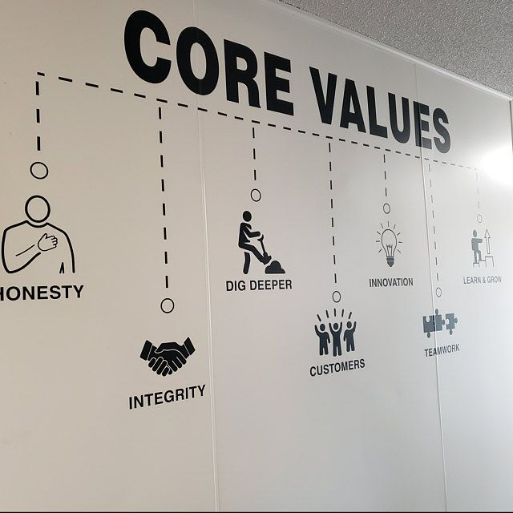

Mission
Build accessible premium streetwear that lasts, with zero compromise on style.
Started in 2022, UrbanWear is a local brand inspired by city life. We design pieces that mix soft textures with street-smart aesthetics so you feel confident all day.
.jpeg)
How UrbanWear Started
In 2022, Mira noticed a gap in the market for premium streetwear that didn't compromise on comfort or sustainability. What started as a passion project in a small Accra studio has evolved into a thriving fashion brand serving thousands of satisfied customers worldwide.
Our Evolution
From handcrafted pieces to full-scale collections, UrbanWear has grown by staying true to its core values. Every step of the journey has been guided by customer feedback, innovative design, and an unwavering commitment to quality.
Our Promise
We believe in effortless shopping with zero complications. Our mission is simple: deliver exceptional products, lightning-fast responses, and a hassle-free experience from browsing to delivery. No side issues, no complaints—just genuine fashion that makes you feel confident.
Build accessible premium streetwear that lasts, with zero compromise on style.
Create a community where fashion and comfort coexist with full authenticity.

Honesty, Sustainability, quality, honesty, and community-focused growth.
From design to dispatch, every UrbanWear team member is a sneaker-loving creative. We ship from Accra and support local talent in every phase.
“Mira’s UrbanWear makes me feel seen. Exceptional craftsmanship in each piece.”
“Clear sizing guide, quick replies, and the returns process was stress-free.”
“Stylish, comfortable, and I keep coming back. A member of my rotate now.”